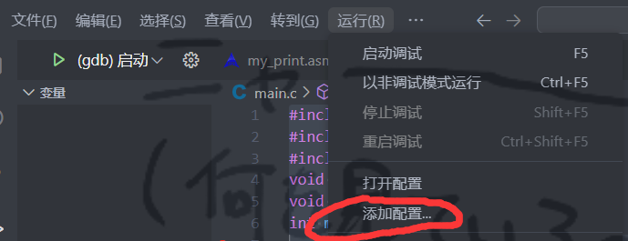
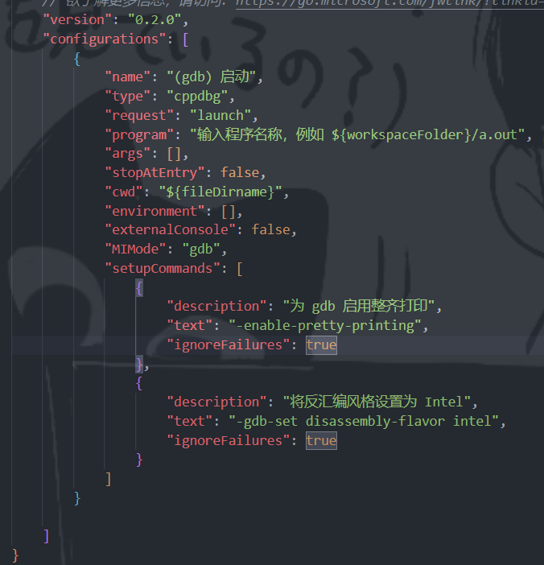
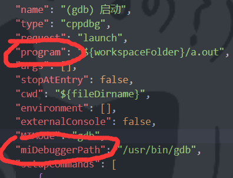
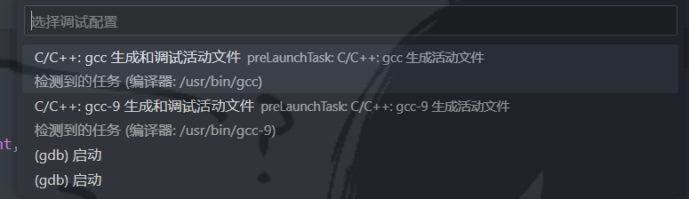

VSCode调试C语言+asm指南
其实这个教程适用于使用gdb调试其他C/C++语言相关内容时都可以使用到，本质上就是学会vscode调试的配置。
一、安装gdb
gdb是一个用于调试C/C++的调试器。正常情况下我们可以在命令行中使用gdb来调试，但是这样过于繁琐。所以我们使用vscode来使用gdb，给与一个调试桌面。
如果使用Linux，可以使用sudo apt install gdb命令直接安装。
二、为代码添加debug配置
在项目文件中打开vscode，然后点击页面顶端的“运行”，点击其中的“添加配置”按钮。

然后它会自动转到launch.json中。此时我们点击上面的“C/C++：(gdb)启动”。

这样之后就会自动在其中生成一段配置内容。

然后我们要做的就是先对其中的配置进行修改。
- 1，program需要先将其前面的中文删掉，然后里面就是你想要调试的可执行文件。
- 2，添加miDebuggerPath属性。它需要指定的是你安装的gdb的路径。通常Linux中它会自动添加到/usr/bin/gdb

三、修改gdb启动时的命令
我们可以回到代码部分，尝试点击右上角的debug按钮：

点击最上面一项：gcc生成和调试活动文件

那么这个时候，如果你的文件中包含了关于asm文件的部分，它大概率会报错：

这其实是因为它的gcc命令没有能够对你的asm文件进行链接。
这个时候，可以看到左上角的.vscode文件夹中生成了一个tasks.json文件。

这里面的args就是你使用gcc命令时添加的参数。我们会发现它并没有任何关于链接.asm文件的部分。因此，你只要手动将这些参数添加进入，就可以顺利进行调试。
例如，我们可以添加-m32参数表示它的asm是32位的。然后最后面添加一个需要链接的文件。例如这里你通过func.asm生成了func.o，那么就可以加入"func.o"这个文件。例如以下：

此时再次尝试点击调试按钮进行调试：

这个时候就发现已经可以成功运行调试了。那么接下来就可以添加断点单步执行等等进行你熟悉的debug任务了。